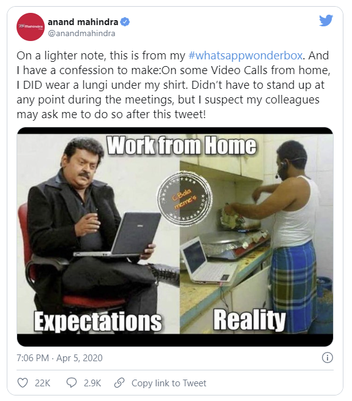
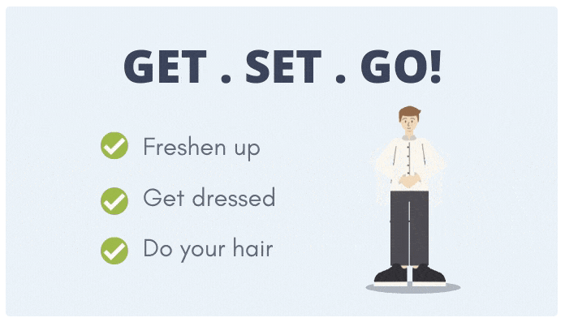

What is your favorite outfit when working remotely?
Pajamas, is it? Of course, it should be, as you get to be in your comfort zone. Dressing up is something that people do not bother about while working from home.
But that’s not how it should be. You must get ready for your work as you usually do.
Yes, you heard that right. Get out of your sleepwear.
Casual dress or pajamas are great, and they give you comfort and a sense of freedom. But donning sweatpants may not help you to stay productive if you wear it for 48 hours straight.
It is not necessary to dress as formally as you might, for work, but a mere act of changing clothes will give you a signal to wake up and get work done.
Our brains are programmed in a way that it takes cues from our social and personal outlook while making a decision. When you dress up for your work, you give the brain a reason for doing it. It’s like a real alarm that can keep you alert throughout the day.
Getting dressed includes all the appearance-based tasks — taking shower, doing your hair and minimal makeup. These factors make you look presentable.
Besides, working from home does not certainly mean that people cannot see you. You might be asked to show up for video meetings which are very common these days.
You are all set!!